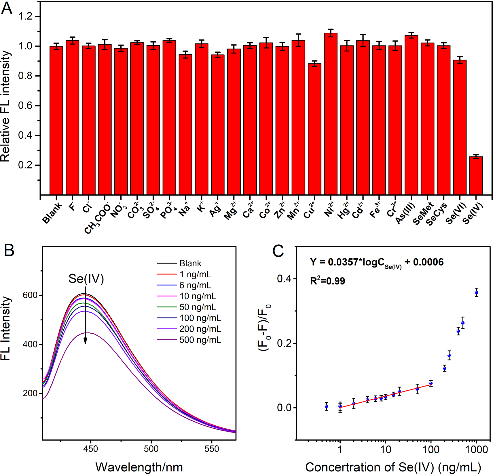

Why This Matters
The Tibetan Plateau, often called the "Third Pole" and "Asia's Water Tower", serves as a critical sentinel for monitoring global anthropogenic impacts in remote, high-altitude ecosystems. Due to its location near rapidly industrializing nations, it's susceptible to long-range atmospheric transport (LRAT) and cold-trapping of persistent organic pollutants.
Sediment cores from Tibetan lakes act as natural archives, recording environmental changes and atmospheric deposition patterns over decades. By analyzing these cores, we can reconstruct the history of global PFAS pollution and evaluate the effectiveness of international regulations.
Study Design
We collected sediment cores from four alpine lakes across the Tibetan Plateau: Qinghai Lake (3190 m), Namco Lake (4718 m), Ranwu Lake (3850 m), and Yamdrok Lake (4441 m). The cores span 1952–2020, allowing us to track nearly 70 years of PFAS deposition history.

Figure 1. Study area and sampling sites across the Tibetan Plateau
Key Findings
PFAS Compounds Analyzed
Comprehensive analysis of 26 per- and polyfluoroalkyl substances in sediment cores
pg/g (dry weight)
Range of total PFAS concentrations across all studied lakes
PFBA Dominance
Perfluorobutanoic acid (PFBA) contributed 48% of total PFASs in Ranwu Lake, reflecting glacier meltwater influence
Years Doubling Time
Short-chain PFBA flux doubling time since post-2000 period
🏔️ Mountain Cold-Trapping Effect
Linear regression revealed a significant elevation-dependent trend across the studied lakes (R² = 0.58, p < 0.01), supporting mountain cold-trapping of PFASs in high-altitude environments. This effect causes pollutants to accumulate at higher elevations due to lower temperatures.
Global Industrial Transformation
Our compositional analysis revealed a global shift from long-chain to short-chain PFASs in Tibetan lake sediments. The sedimentary record shows:
- Declining PFOS (C8) — Following the 2009 Stockholm Convention restrictions
- Rapidly increasing PFBA (C4) — Reflecting industry's shift to short-chain alternatives
- Post-2000 surge — All lakes showed pronounced rise after 2000, correlating with global production shifts

Temporal trends of PFAS deposition fluxes across the four studied lakes
Methods
Sediment samples were collected using an HTH gravity sampler and analyzed for 26 PFAS compounds including PFCAs, PFSAs, and emerging PFASs. The analytical workflow included:
- Sediment dating using radionuclide chronology
- Solid-phase extraction (Oasis WAX SPE)
- HPLC-ESI-MS/MS quantification
- Quality control with ¹³C-labeled internal standards